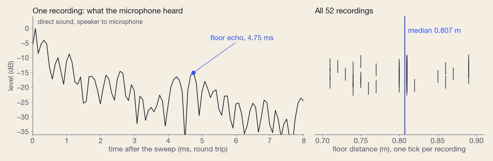

OpenPetCam / Blog / 5 November 2026
Mapping a room with a $12 camera that can only turn
It has a lens, a speaker, an infrared lamp and a motor that rotates it. It has no way to see anything from two places. It built a 3D model of its room in metres anyway, and now uses it to find the dog.
Why a pet camera wants a map
OpenPetCam runs on a cheap pan/tilt Wi-Fi camera flashed with Thingino and a $5 server. Its main trick is Find: when the dog is out of view, the camera goes looking for her. Find kept wasting its looks. Across 1,268 settled search frames, 304 (24%) showed almost no floor at all: the underside of the counter, a cabinet, a wall. A dog is never there. To skip those views, the camera needed to know what it was looking at, and that means geometry.
The catch: no parallax
Depth from vision normally comes from parallax. See a point from two places, measure how far it shifts, and you can triangulate its distance. A pan/tilt camera rotates about a fixed point, so every picture it can ever take is a different crop of one panorama. There is nothing to triangulate. A rotation-only camera can tell you the direction of everything and the distance of nothing. So distance had to come from somewhere other than the camera's geometry.
A ruler made of sound
The camera has a speaker and a microphone on the same small body. We play a sweep from 2.1 to 7.4 kHz through the speaker, record the raw microphone signal, and deconvolve it into an impulse response: what arrived, and when. The first spike is the sound going straight from speaker to microphone. Everything after it is an echo.

The strongest echo between 0.7 and 0.95 m is the floor. Its median round trip over 52 recordings is 4.71 ms, and 4.71 ms × 343 m/s ÷ 2 = 0.807 m. That one number turned out to be the most valuable measurement in the project, because it is the ruler for everything else.
Shape from a depth model, scale from the echo
First the camera calibrates itself from its own sweep: matching features across 67 overlapping views recovers the lens and the motor's step angles to about 3 pixels, and later snapshots registered against the panorama catch the mount drifting. Then Depth Anything 3 turns each photo into a depth map.

Each map is internally consistent but comes out at its own arbitrary scale, so neighbouring maps disagree where they overlap. Merging them in the gradient domain into one range panorama, then scaling that panorama so the floor sits 0.807 m below the lens, gives a single shell in metres. The check that does not trust the depth model is the dog. At 2,255 places where the detector saw her standing, her feet must be on the floor, and the shell's floor there is off by a median of 4.7% (a per-pixel median of the raw frames manages 5.2%). The walls still have no independent check; that comes up again at the end.
The obvious idea that failed: echoes as a map
If one echo gives the floor, shouldn't fifty echoes from fifty head directions give the room? We chirped in about fifty directions and fitted a physics model to predict each recording, first rays, then a full 3D wave simulation of the near field (checked against the 1/r law to 0.1%). It matched. Then came the test that mattered: give each recording the wrong head direction and fit again. It matched just as well, 0.397 against 0.402. An echo from a camera this size tells you how far something is, and almost nothing about which way. Sound earned two jobs: the scale, and one blind spot the lens cannot see, the counter just above it, which 48 of 51 recordings put about 0.18 m away.
Materials from the infrared lamp

At night the camera switches on its own infrared LEDs. Subtracting a passive frame leaves only the camera's light, and comparing it with daylight separates materials: plants, fabric and fur reflect near-infrared strongly, screens stay dark. For now this layer is qualitative; nobody has held up a sheet of paper and a black plastic tray to calibrate it.
Time is the fourth dimension

The model is made of small surface patches, and each one keeps a history: how its light changes from dawn to night, and how long the dog spent on it at each hour of the day. This is the part that pays for the rest. When the dog goes missing, Find now skips views that show no floor and starts where she usually rests at that hour.

Replayed on 56 recorded searches, she was in view at one of the stops in 48 of them, against 36 with the old order. Where both orders reach her, the map gets there first in 19 of 26 searches, a median of 4.6 seconds sooner.
What did not work, in numbers
- Wi-Fi as an imager. The idea was radio tomography with the dog as the moving probe. The link strength does follow where the antenna points (split-half correlation 0.76), which happens to locate the router behind the sofa. But once the camera's pose is controlled for, the dog's position explains nothing beyond chance.
- Passive acoustics. Recovering echoes from ordinary room noise gave a signal well below significance over 8 minutes.
- A simulator built on the model. We built a simulated room from the model to train the camera's following behaviour. On held-out days of real logs it did worse than a simple schematic room: 11 of 21 measures inside their range, against 20 of 21. The map is good at telling the camera where to look and bad at predicting how the dog moves.
What it costs
| Part | What |
|---|---|
| Camera | A $12 pan/tilt camera on Thingino firmware |
| Server | A $5/month Lightsail instance. It serves the app and keeps the model; nothing goes to a vendor's cloud |
| Model build | On a laptop, from a sweep of 67 photos and about fifty chirps |
Try it, and what is next
The pipeline is in sim/world/, and every claim above has a row in its audit table with the check behind it and what is still unproven. Your room's model and pictures stay on your own server.
The next step came by accident. This week the camera was re-mounted with fresh tape, a little closer to the edge of the counter. In the first pictures afterwards, the nearest object, the sofa, shifts against the far wall by a few pixels, which a pure rotation cannot do. That is only six matched points so far, but it would be the first parallax this camera has ever had. Tonight it sweeps the room again from the new spot. If the shift holds up, the two positions make a stereo pair, and a stereo pair would finally give the walls an independent check.